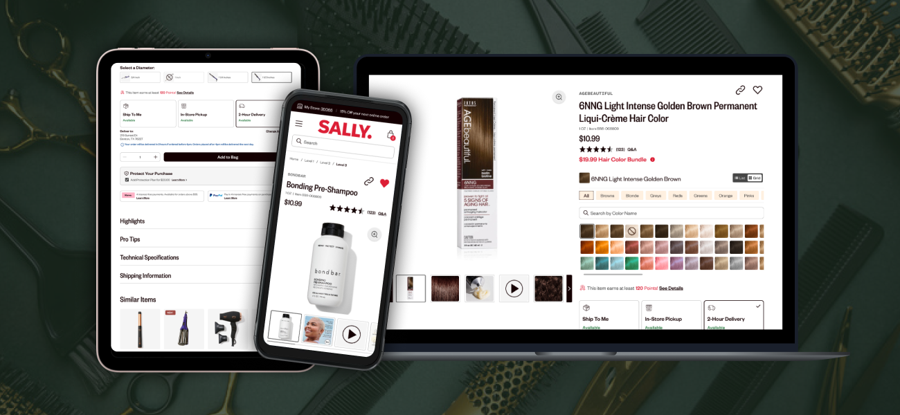

Site Enhancements: Product Detail Pages
When Sally Beauty's executive team commissioned a third-party marketing agency to completely overhaul their branding, I was tasked with integrating an entirely new visual aesthetic into our existing design system. A major lift involved updating the Product Detail Pages (PDPs), one of the most critical parts of an e-commerce website, without sacrificing usability or conversion performance.
COMPANY
- Company: Sally Beauty
- Project Length: 4 Months
- Platforms: Web (Desktop & Mobile)
MY ROLE
- Discovery & Research
- UI/UX Design
- Prototyping
- User Testing
CROSS-FUNCTIONAL COLLABORATION
- Back-End Development
- Front-End Development
- Marketing
- Ecommerce
- Analytics
- Personalization
METHODS & TOOLS
- Figma
- UserTesting.com
- Quantum Metrics
- Heuristic Evaluation
- Visual/UI Design
- Design System Development
- High Fidelity Wireframes
- Accessibility Standards
- User Testing & Evaluation
At a Glance
I led the redesign of Sally Beauty's Product Detail Pages (PDPs) on their e-commerce website, balancing updates to the visual design and branding without making changes that would negatively impact page performance.
The result? The enhanced PDP templates became the foundation for Sally Beauty's post-rebrand e-commerce experience, providing sustained conversion improvements, a strengthened design system foundation, and a template for future brand and UX initiatives. A/B testing showed consistent performance gains across product categories while successfully maintaining usability and accessibility standards through major UI changes.
Explore the Full PDP Redesign in FigmaJUMP TO A SECTION:
Goals & Challenges | Discovery & Research | The Design Process | Implementation & Results | Long-term Impact
Goals & Challenges
The Business Goal: Rebranding the Website Without Negative Performance Impact
The executive decision to completely overhaul the Sally Beauty website was not just an aesthetic choice but part of a larger brand strategy to reposition itself in an increasingly competitive beauty retail market. However, this created a potential business risk: product detail pages generate the majority of e-commerce conversions, and any disruption could significantly impact revenue. We couldn't afford to simply apply new branding without addressing fundamental usability concerns.
Opportunities for Optimization
Our stakeholders on the e-commerce and analytics teams had raised concerns about site performance issues the product team needed to tackle in the new fiscal year. Rather than simply giving the PDPs a facelift, our UX team recognized this as an excellent opportunity to identify as many areas of improvement as possible and tackle them in one initiative.
The Design Challenge
The third-party redesign delivered a dramatically different look, clearly developed by a graphic design team whose primary concern was aesthetics. Implementing this new look would require careful consideration of:
Design System Integration
Our existing UI library needed comprehensive updates without breaking active projects.
Usability Preservation
New designs had to maintain proven UI patterns and accessibility standards.
Multiple Page Variants
Individual products, multi-option products (color, size, scent), and out-of-stock scenarios all required unique templates and process flows for associated functionality.
Discovery & Research
Strategic Project Breakdown
Given the complexity of updating multiple PDP variants while maintaining an active e-commerce site, we found it helpful to break down the project into focused sprints targeting general sections of the PDP anatomy, then further into more specialized components within those sections. This approach allowed us to prioritize efficiently while ensuring thorough attention to each page variant's unique requirements.
Data-Driven Requirements Gathering
I extracted insights from several months of e-commerce and analytics research decks to identify specific customer pain points on our existing PDPs. This data became crucial for justifying design decisions and ensuring our rebrand addressed real user needs rather than just aesthetic preferences.
Heuristic Evaluation & Gap Analysis
The UX team conducted a thorough assessment comparing the marketing agency's wireframes to our existing site. Our junior designer conducted competitor research to benchmark our current PDPs against industry standards, revealing opportunities to improve our adherence to best practices. Together, we identified several key areas for improvement:
Lost Functionality
Some standard page features were omitted from the new design and would have to be added back in.
Accessibility Concerns
Some elements failed to meet accessibility best practices, particularly in the use of color and contrast.
Usability Conflicts
The new design introduced elements contradicting established UI patterns that had already tested well for our users.
Performance Opportunities
Data from page analytics revealed areas where we could address specific customer frustrations with the current design.
Comparison of the live site's product detail pages (left) vs. the proposed rebrand (right)
Design System Audit
With a robust library of existing page templates and UI assets, we conducted a comprehensive audit to determine:
Figma Component Changes
We broke down the PDP page anatomy into its core components and identified which of our existing assets in Figma needed updates vs. complete rebuilds.
Working Around Handoff Files
We had to take care that none of the updates we made would impact ongoing projects in handoff status by breaking approved designs.
Documentation Updates
We needed to make sure all documentation and guidelines in the design system accounted for changes in brand standards and library components.
Priority Sequencing
Since we were going to be updating the PDP in sections, we had to determine which were a higher priority to complete first and hand off to development for implementation and testing.
Example of a complex, nested PDP component update in the design system
The Design Process
Comprehensive Wireframing & Flow Documentation
I created high-fidelity wireframes for all PDP variants, ensuring each template included detailed interaction flows to demonstrate functionality and guide development implementation:
Single product pages
The default "boilerplate" template with all the basic elements included on every PDP
Color selection variant
Products with extensive color selection options and functions unique to this variant (grid vs. list views, color swatch search)
Multi-option variant
Products with options for non-color attributes like size and scent
Out-of-stock
Examples of unavailable options for each variant
Prototyping & Iterative User Testing
Since we wanted to validate multiple aspects of the redesign, I planned a comprehensive testing strategy across project phases:
Brand Interpretation Testing
Initial survey-based testing evaluated how users interpreted the new iconography and color schemes from the marketing rebrand. This helped us identify which aesthetic elements caused confusion and needed modification.
Functional Prototype Testing
We tested interactive prototypes of two key variants to cover the most important functions: single product PDPs for streamlined purchasing decisions and multi-option product PDPs for complex selection processes.
Promotional Feature Testing
Special focus on bundle promotion functionality, which e-commerce frequently uses but had historically caused user confusion. Testing revealed different use cases and informed clearer communication strategies.
Interactive prototypes of the multi-option product PDP test
Results & Refinements
Our optimized designs tested positively across all variants, requiring only minor refinements. The testing validated our approach of preserving proven UX patterns while updating the visual design, and confirmed that our improvements to promotional clarity would reduce customer confusion.
Full comparison of the evolution from the older live site (left) to the rebrand design (center) to the final optimized design (right).
Product Bundle Functionality
Special focus on bundle promotion functionality, which e-commerce frequently uses but had historically caused user confusion. Testing revealed different use cases and informed clearer communication strategies.
Example of product promotional bundle redesign & improved functionality
Implementation & Results
Incremental Rollout Strategy
Development implemented PDP updates incrementally, allowing for A/B testing of individual components. This approach minimized risk while providing data on each enhancement's impact.
Measurable Impact
Conversion Rate Improvements
PDP conversion rates increased across page variants during A/B testing
Component-Level Optimization
Element-level tests identified which changes drove the most impact
Design System Strengthening
Updated UI library provided a cohesive, reusable foundation
Performance Gains
Integration with e-commerce recommendations addressed known pain points
Key Learnings:
-
Balancing Brand Vision with User Needs
This project taught me how to effectively advocate for user experience within brand-driven initiatives. By using data to justify design decisions, I was able to push back on aesthetic choices that would have compromised usability while still achieving the marketing team's brand goals. The key was framing UX recommendations in terms of business impact rather than design preferences.
-
Managing Complex Stakeholder Alignment
Successfully coordinating between marketing's brand vision, e-commerce's performance needs, analytics' data insights, and development's technical constraints required careful communication and prioritization. I learned to create alignment by focusing everyone on shared goals—improved conversion rates and better customer experience—rather than getting caught up in individual department priorities.
-
Strategic Project Decomposition
Breaking a massive rebrand project into focused component sprints proved essential for maintaining quality while meeting aggressive timelines. This approach allowed deep focus on each element's unique requirements while ensuring the overall experience remained cohesive. It also enabled better risk management through incremental testing and rollout.
-
Data-Driven Design Advocacy
Using existing analytics and research to support design decisions proved crucial when integrating third-party brand designs. By grounding UX recommendations in performance data and user research, I could advocate for necessary changes while demonstrating respect for the brand investment and executive decision-making.
Long-term Impact
The enhanced PDP templates became the foundation for Sally Beauty's post-rebrand e-commerce experience, providing:
Sustained Conversion Improvements
A/B testing showed consistent performance gains across product categories
Better Design System Scalability
Updated components supported future site enhancements and new product launches
Cross-Team Collaboration Model
The integrated approach became a template for future brand and UX initiatives
User Experience Preservation
Successfully maintained usability and accessibility standards through major visual changes
The PDP enhancement project showcased how strategic UX thinking can transform a potentially disruptive brand mandate into an opportunity for comprehensive user experience improvement, resulting in measurable business impact and a stronger design foundation for future growth.